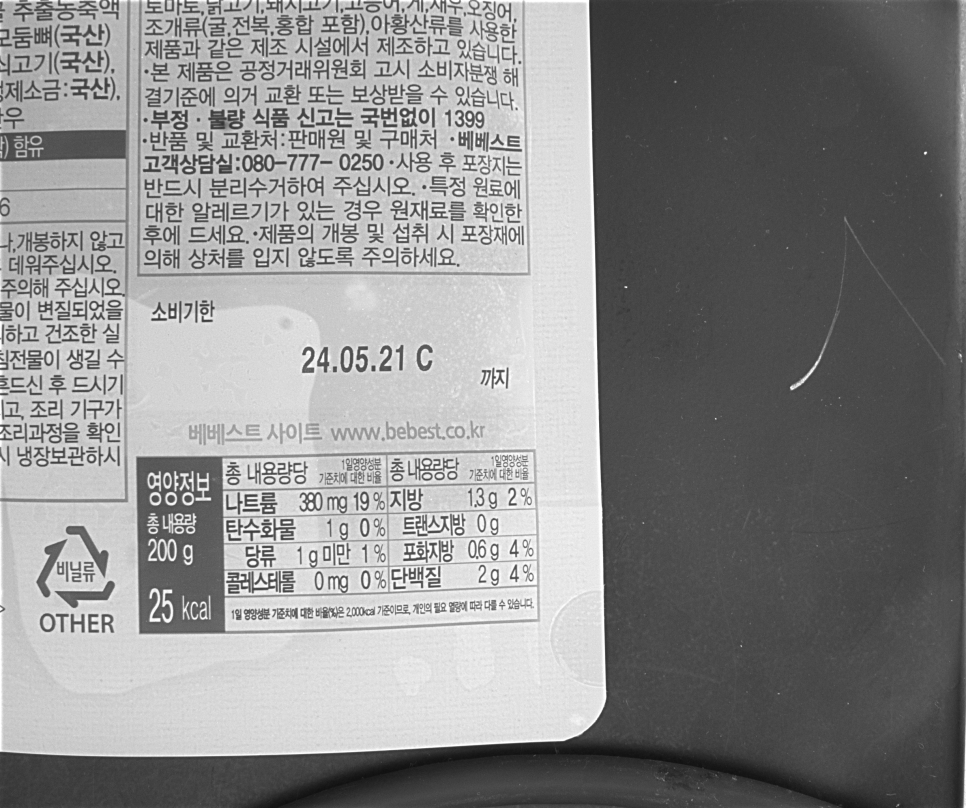
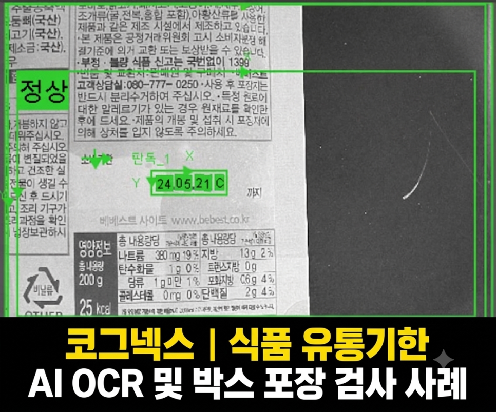
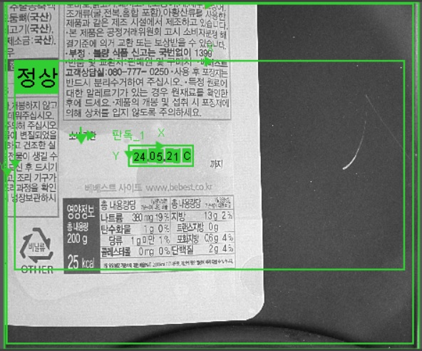
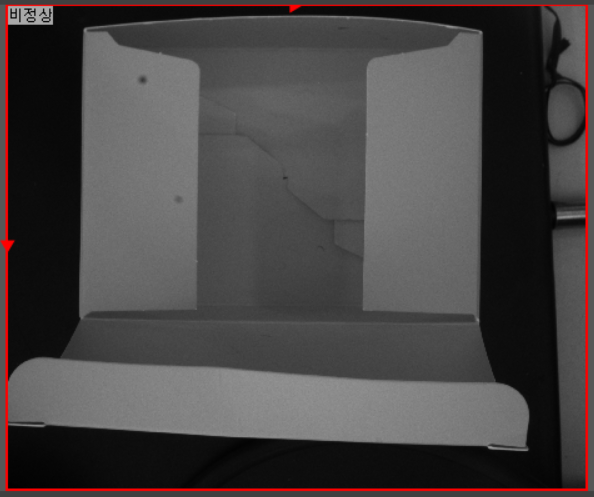
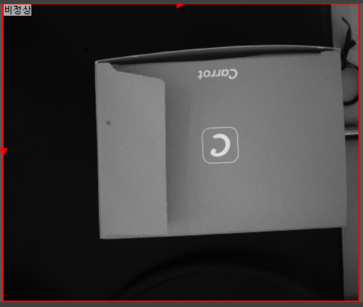
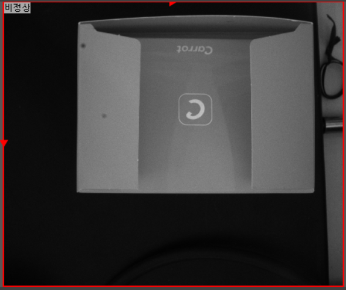
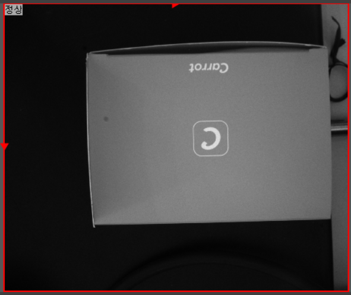
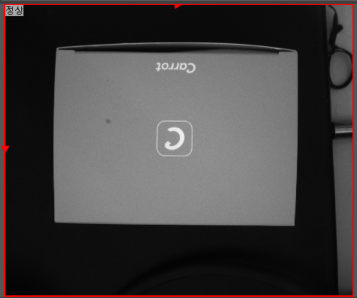

식품 · 포장 · OCR · OCV
식품 유통기한 AI OCR·박스 포장검사 시스템 사례
AI OCR · AI Classification
플랫돔 조명으로 반사 영향을 줄인 뒤 유통기한을 AI OCR로 판독하고, AI Classification으로 박스의 닫힘 상태를 함께 검사한 사례입니다.

Project Summary
프로젝트 핵심 구성
- 산업
- 식품 · 포장
- 검사·자동화 대상
- 식품 유통기한 AI OCR·박스 포장검사
- 주요 기술
- AI OCR · AI Classification
- 적용 구분
- 프로젝트 사례
01 · Overview
프로젝트 개요
플랫돔 조명으로 반사 영향을 줄인 뒤 유통기한을 AI OCR로 판독하고, AI Classification으로 박스의 닫힘 상태를 함께 검사한 사례입니다.
02 · Problem
프로젝트에서 해결해야 했던 문제
고객사는 다음과 같은 문제를 해결하고자 하였습니다.
유통기한을 작업자가 직접 확인
포장재의 심한 난반사로 OCR 인식률 저하
다양한 제품에 대한 검사 조건 관리 필요
박스 포장 불량 자동 검출 필요
빠른 생산 속도를 유지하면서 검사 정확도 확보 필요
특히 식품 산업에서는 한 번의 출하 불량이 대규모 리콜이나 품질 클레임으로 이어질 수 있기 때문에 안정적인 자동 검사 시스템 구축이 중요했습니다.
- 포장재 난반사
- 유통기한 인쇄 편차
- 박스 닫힘 상태
03 · System
검사·자동화 시스템 구성
플랫돔 조명으로 반사 영향을 줄인 뒤 유통기한을 AI OCR로 판독하고, AI Classification으로 박스의 닫힘 상태를 함께 검사한 사례입니다.
유통기한 AI OCR
박스 포장 AI 분류
종합 판정

04 · Inspection
프로젝트 배경
식품 생산라인에서 유통기한과 포장 상태 검사는 제품 출하 전 반드시 확인해야 하는 핵심 품질 관리 항목입니다.
유통기한이 잘못 인쇄되거나 포장이 정상적으로 이루어지지 않은 제품이 출하될 경우 단순 불량을 넘어 제품 회수(Recall), 품질 클레임, 브랜드 신뢰도 하락 등 큰 손실로 이어질 수 있습니다.
하지만 생산 속도가 빠른 식품 라인에서 작업자가 모든 제품의 유통기한과 포장 상태를 일정한 기준으로 확인하는 것은 쉽지 않습니다.
이번 프로젝트에서는 AI OCR을 이용한 식품 유통기한 검사와 AI Classification을 이용한 박스 포장 상태 검사를 동시에 수행하는 머신비전 시스템을 구축하였습니다.
05 · Inspection
고객의 고민
고객사는 다음과 같은 문제를 해결하고자 하였습니다.
유통기한을 작업자가 직접 확인
포장재의 심한 난반사로 OCR 인식률 저하
다양한 제품에 대한 검사 조건 관리 필요
박스 포장 불량 자동 검출 필요
빠른 생산 속도를 유지하면서 검사 정확도 확보 필요
특히 식품 산업에서는 한 번의 출하 불량이 대규모 리콜이나 품질 클레임으로 이어질 수 있기 때문에 안정적인 자동 검사 시스템 구축이 중요했습니다.
06 · Inspection
가장 중요한 것은 광학 조건이었습니다
이번 프로젝트에서 가장 먼저 해결해야 했던 문제는 포장재에서 발생하는 난반사였습니다.
제품 표면의 빛 반사가 매우 심했기 때문에 단순히 고성능 카메라를 적용하는 것만으로는 안정적인 유통기한 OCR 영상을 확보하기 어려웠습니다.
머신비전 검사에서는 카메라의 해상도나 AI 성능만큼이나 조명과 광학 조건을 어떻게 구성하느냐가 중요합니다.
프로젝트 초기에는 여러 종류의 머신비전 조명을 테스트하였습니다.
하지만 일부 조명에서는
포장재에 강한 난반사가 발생하거나
설치 공간의 제약이 발생하거나
배경과 문자의 대비가 충분하지 않은
문제가 있었습니다.
여러 광학 조건을 비교 테스트한 결과, 이번 제품에는 플랫돔(Flat Dome) 조명이 가장 적합하다고 판단하였습니다.
플랫돔 조명을 적용하여 포장재의 난반사를 효과적으로 억제하고 검사 영역 전체에 비교적 균일한 빛을 조사함으로써 AI OCR에 적합한 영상을 확보할 수 있었습니다.

07 · Inspection
AI OCR을 활용한 유통기한 자동 검사
광학 조건을 최적화한 이후 AI OCR을 이용한 유통기한 자동 검사를 적용하였습니다.
식품 포장지에 인쇄되는 유통기한은 실제 생산환경에서 항상 동일한 상태로 촬영되지 않습니다.
인쇄 품질 편차
포장재 위치 변화
포장지의 구김
문자 대비 변화
제품별 인쇄 조건 차이
등 다양한 변수가 발생할 수 있습니다.
AI 기반 OCR은 이러한 문자 형태와 인쇄 상태의 변화가 존재하는 환경에서 기존의 고정된 문자 패턴이나 조건을 사용하는 방식보다 유연하게 대응할 수 있다는 장점이 있습니다.
이번 프로젝트에서도 실제 생산환경에서 발생할 수 있는 다양한 조건을 고려하여 유통기한의 숫자, 영문 및 기호를 안정적으로 판독할 수 있도록 검사 조건을 최적화하였습니다.
08 · Inspection
AI OCR도 데이터와 검증이 중요합니다
AI OCR이라고 해서 모든 문자를 처음부터 완벽하게 판독할 수 있는 것은 아닙니다.
실제 생산라인에서는 폰트, 인쇄 품질, 문자 간격, 포장재 상태, 조명 변화 등 다양한 조건이 발생하기 때문에 실제 생산 데이터를 기반으로 충분한 검증이 필요합니다.
ASPEC은 실제 생산환경의 데이터를 기반으로 OCR 성능을 확인하고 오인식 또는 미인식이 발생하는 조건을 반복적으로 검증하여 현장에서 안정적으로 사용할 수 있는 유통기한 검사 시스템을 구축하였습니다.





09 · Inspection
박스 포장 상태도 동시에 검사
이번 프로젝트에서는 유통기한 OCR뿐만 아니라 박스 포장 상태 검사도 함께 진행하였습니다.
검사 기준은 명확했습니다.
모든 박스가 정상적으로 닫혀 있으면 OK
하나라도 정상적으로 닫혀 있지 않으면 NG
이러한 검사는 룰베이스 방식으로도 구현할 수 있지만 박스의 위치나 형상, 촬영 상태가 달라질 경우 검사 조건이 복잡해질 수 있습니다.
따라서 이번 프로젝트에서는 AI Classification을 적용하였습니다.
정상적으로 포장된 이미지와 포장 불량 이미지를 기반으로 정상/불량 특징을 구분하도록 구성하여 복잡한 위치 측정이나 다수의 검사 조건을 설정하지 않고도 포장 상태를 판별할 수 있도록 하였습니다.
특히 제품이나 박스의 위치에 일정 수준의 편차가 발생하더라도 단순 픽셀 위치만을 기준으로 판단하지 않기 때문에 실제 생산환경에서 보다 유연하게 대응할 수 있었습니다.
10 · Inspection
빠른 생산라인에서도 안정적인 검사
식품 생산라인은 제품 이동 속도가 빠르기 때문에 검사 정확도뿐만 아니라 검사 처리 속도도 매우 중요합니다.
아무리 정확한 검사 시스템이라도 기존 생산라인의 택타임을 충족하지 못한다면 실제 현장에 적용하기 어렵습니다.
이번 프로젝트에서는
광학 조건 최적화
AI OCR
AI Classification
검사 영역 및 처리 조건 최적화
를 함께 진행하여 기존 생산라인의 속도를 유지하면서 유통기한과 포장 상태를 자동으로 검사할 수 있도록 시스템을 구성하였습니다.
이를 통해 높은 검사 안정성과 생산라인에 필요한 처리 속도를 동시에 확보할 수 있었습니다.
11 · Inspection
이번 프로젝트를 통해 고객이 얻은 효과
이번 시스템 구축으로 고객사는 다음과 같은 효과를 얻을 수 있었습니다.
✔ 유통기한 AI OCR 자동 검사
✔ 박스 포장 상태 자동 검사
✔ 작업자의 육안 검사 최소화
✔ 휴먼에러 감소
✔ 난반사 환경에서 안정적인 영상 확보
✔ 플랫돔 조명을 활용한 광학 조건 최적화
✔ AI Classification을 이용한 포장 상태 판별
✔ 기존 생산라인 택타임 유지
✔ 품질 관리 신뢰성 향상
✔ 불량 제품 출하 위험 감소
✔ 생산성 향상
12 · Inspection
머신비전 검사는 광학과 소프트웨어가 함께 중요합니다
머신비전 프로젝트는 단순히 고성능 카메라나 AI 알고리즘을 적용한다고 해결되는 것이 아닙니다.
제품의 재질과 색상, 난반사 특성, 설치 공간, 생산 속도, 검사 기준 등을 종합적으로 고려하여 카메라·렌즈·조명 등의 광학 설계와 검사 알고리즘을 함께 최적화해야 실제 생산라인에서 안정적으로 사용할 수 있습니다.
이번 프로젝트 역시 포장재의 난반사 문제를 먼저 광학적으로 해결한 뒤 AI OCR과 AI Classification을 적용함으로써 유통기한 검사와 박스 포장 검사를 하나의 공정에서 안정적으로 수행할 수 있도록 구축한 사례입니다.
ASPEC은 식품, 자동차, 제약·바이오, 의료기기, 전자부품 등 다양한 산업 현장에서 머신비전 시스템 및 AI 비전검사 프로젝트를 수행하고 있습니다.
단순한 카메라 및 비전 장비 공급이 아니라 실제 검사 대상과 생산환경을 분석하여 광학 선정부터 비전 프로그램 개발, 현장 설치 및 셋업까지 검사 시스템 전체를 구축합니다.
Operation
현장 적용과 운영 조건
플랫돔 조명으로 반사 영향을 줄인 뒤 유통기한을 AI OCR로 판독하고, AI Classification으로 박스의 닫힘 상태를 함께 검사한 사례입니다.
- 포장재 난반사
- 유통기한 인쇄 편차
- 박스 닫힘 상태
Result
적용 효과
- 유통기한 AI OCR 자동 검사
- 박스 포장 상태 자동 검사
- 작업자의 육안 검사 최소화
- 휴먼에러 감소
- 난반사 환경에서 안정적인 영상 확보
- 플랫돔 조명을 활용한 광학 조건 최적화
- AI Classification을 이용한 포장 상태 판별
- 기존 생산라인 택타임 유지
- 품질 관리 신뢰성 향상
- 불량 제품 출하 위험 감소
- 생산성 향상
Engineering
ASPEC의 머신비전 시스템 설계 방식
검사 대상의 재질과 형상, 설치 공간과 생산 조건에 맞춰 장비·광학·소프트웨어와 설비 연동을 함께 검토합니다.
- 포장재 난반사
- 유통기한 인쇄 편차
- 박스 닫힘 상태
08 · Related Cases
관련 구축사례
비슷한 공정의 자동화를 검토하고 계신가요?
검사 대상과 불량 샘플, 설치 공간, 택타임을 알려주시면 적용 구성을 검토해 드립니다.